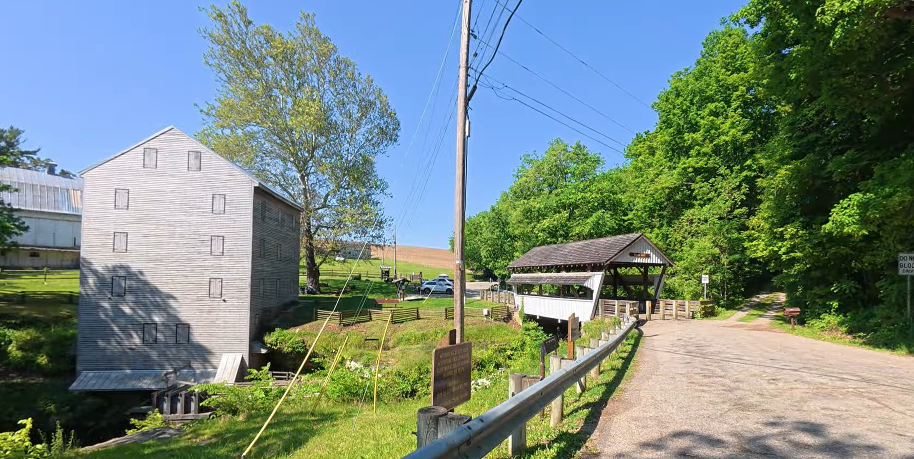

Rockmill Covered Bridge, Mill & Waterfall
A quiet Ohio stop where a covered bridge, historic mill, and waterfall all come together in one beautiful place.

Our Visit
Rockmill gave us several reasons to slow down in one stop.
The covered bridge, old mill, and waterfall each had their own character, but together they made the whole area feel special.
These are the kinds of places we enjoy finding — simple, peaceful, and worth taking a few extra minutes to explore.
A Little History
Rockmill is known for its historic mill, covered bridge, and scenic setting near Lancaster, Ohio.
Mills like this once played an important role in local communities, using water power to support everyday life and commerce.
Today, the bridge, mill, and waterfall preserve a piece of Ohio history in a setting that still feels connected to the land around it.
Come Along With Us
Watch the Rockmill Covered Bridge, Mill & Waterfall.
Nearby Discoveries
Rockmill fits naturally with other Fairfield County covered bridges, scenic drives, parks, and historic places.
As GO-CA-TION grows, this page will connect with more nearby stops from our travels through this part of Ohio.